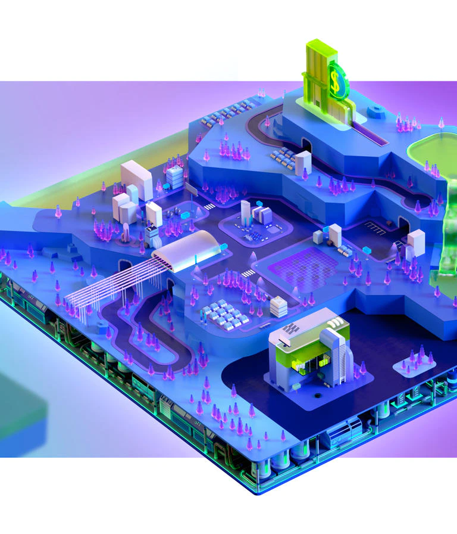

Hello! I like to code and sometime I write stuff too.
Most Recent ExCollege Class Post (11/01)

Unity Game Engine
This week I wanted to highlight a tool widely used for game development – Unity Game Engine. Last week’s post featured Yokai Inn, which is being developed solely using Unity. The engine is widely used in the game development community, both for small indie developers and for large scale companies like Blizzard (who made the wildly popular “Hearthstone” using Unity). There are an endless number of games that have been created in Unity, and today I wanted to explore what makes Unity so popular and how it came to be one of the premier tools to create and operate games.
Unity was developed in 2004 using two main languages, C++ and C# (C-sharp). The engine was originally released under the name Over Edge which was later changed to Unity in 2007. Unity has done a fantastic job of making their platform accessible. They have free models for both students and company’s (or individuals) with less than $100k TTM. Unity generates money off smaller developers by taking 30% of the profits. This model allows for smaller teams to be able to develop games without needing to raise large rounds of funding – it lightens the upfront load and still allows for Unity to make a profit if a game released by a small team does well. For larger development teams like Blizzard, there is a subscription model on top of that same 30% cut. Since Unity’s start 17 years ago, the company has exploded in popularity. The company did $541.8M in 2019 revenue, up 42% YoY with 1.5 million monthly active creators in over 190 countries and territories. Much of this success can be attributed to their accessibility as well as their terrific UI.
To develop in Unity, users exclusively use object-oriented scripting languages like C#. I have recently begun working with Unity to develop a game. The UI is very intuitive, and they provide a surplus of resources for beginners. Using the student plan, I was able to gain access to a large library of assets that otherwise would have cost a few hundred dollars. If you wish, when creating you first project, Unity provides you with a few partially built games and allows you to get introduced to the software building off an existing “game.” I stated with the kart racing game and have enjoyed developing simple aspects while being able to see them displayed on an already-functioning game.
Unity has grown quickly and has developed into one of the top game development environments across the globe. There is a myriad of reasons for this, but many of them stem from the platform’s willingness to assist new developers, financial accessibility, a strong UI, and a powerful engine. Although my experience with Unity is limited, I would highly recommend it to anyone trying to develop a game for themselves or with a small team. In weeks previous, we’ve seen people create very exciting games through Unity, and if you don’t believe me, there are an additional 1.5 million people a month who choose to use Unity for their game development needs. If you’re interested in getting started, check out their student and personal plans here – all for free.